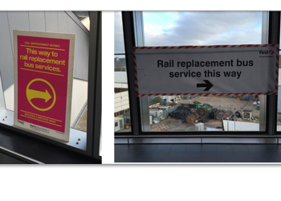
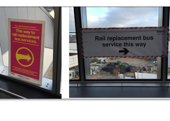

Summary
TrainHack is The winning group devised a solution to rail travelling by restructuring existing information about disruption to make it machine readable and analysable. Applying their structure to industry disruption information will allow developers to build better tools for customers to negotiate disruption.
Problem
Passengers are often suprised by unexpected disruption on their journey even when the disruption has been plan far in advance. Passengers are being informed about plan disruptions through big posters in the trains stations which are often overlooked.

Research
We talked to station staff who are seing frustrated passengers regulary due to uninformed about planed distruption in advance. Pointing us to the big posters at the station. People don't read it!
 

Proposed Solution
Their solution also includes a basic prototype visualisation tool (route map) that displays the areas affected by disruption based on the output from data produced using the new system. The map itself was not “aesthetically strong”, but the underlying technical solution to link the data feed into the visual output was fully functional.
Designs
As soon as data are better structured, the information can be integrated in any app for train schedule like TrainLine.
 Planned disruption integrated in TrainLine app.
Planned disruption integrated in TrainLine app.